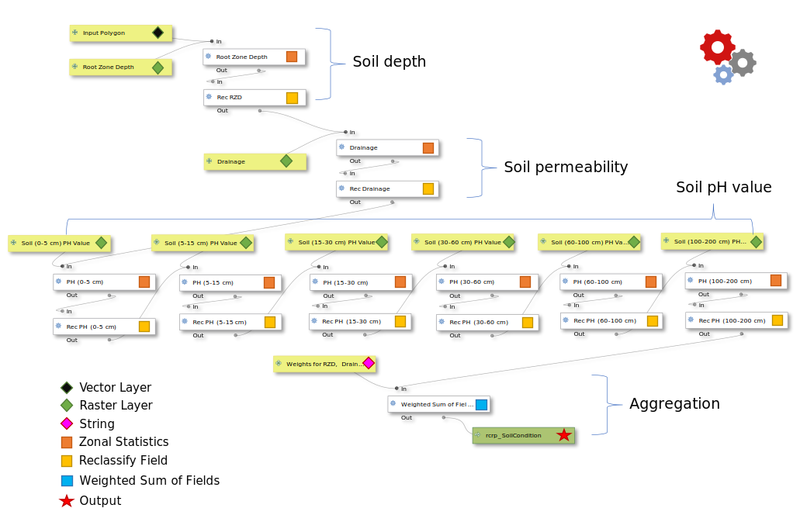

Module 3 - Create Suitability Models with QGIS Graphical Modeler#
What will you learn from this module?
Understand the general workflow of suitability modeling,
Get to know the QGIS Graphical Modeler,
Learn how to build suitability models with OPEN-LUCIS tools for QGIS in the Graphical Modeler,
Learn the details and the logic behind the suitability models for Row Crops.
1. Land-use Suitability Modeling#
Suitability is a measure of the relative degree to which a land unit is suitable for a specified purpose. The decision on suitability is based strictly on its current condition and the context in which it is found. It neither anticipates nor requires any change for the assignment of a suitability score. Suitability modeling is the process of determining suitability. Its output is usually presented in a suitability map as the example shown below, in which Green areas indicate better suitability and Red areas suggest lower suitability considering two factors: (a) transportation access and (b) market proximity.

💡Note:
This “GREEN(good)-RED(bad)” symbology style is a convention that has been followed since the early time of land-use suitability modeling.
The general workflow of suitability modeling#
1.1 Define Criteria#
The first step to create a suitability model is to identify the criteria for the subject of the model. Each criterion identified should be instrumental in reaching the overall goal of the model. For example, if we want to locate a suitable site for a crop field, we might consider four criteria:
Soil permeability
Distance to major roads
Land value per unit area
Current land use
As it has been introduced in Module 2, OPEN-LUCIS Tools for QGIS consists of various geospatial tools to measure different criteria defined in a suitability analysis, such as Distance, Density, and Zonal Statistics tools.
1.2 Transform to a Common Suitability Scale#
All four criteria mentioned above affect, although in different magnitudes, how a land parcel is suitable for an orchard. Therefore, to determine suitability for orchards, we need to combine these criteria in a meaningful way. However, criteria are often measured with different measurement levels (nominal, ordinal, interval, and ratio) at different scales. Hence, transformations to each criterion from its original scale to a common suitability scale are needed. In theory, you can choose any arbitrary interval for such suitability scale. But, to follow the convention of the Land-Use Conflict Identification Strategy (LUCIS), we will use a scale of 1 to 9 throughout this workshop, where 1 represents lowest suitability and 9 represents highest suitability.
In general, there are three transformation methods:
Unique categories: is a one-to-one matching of the criterion value to the suitability value and best for nominal and ordinal data.
Range of classes: is applied when ranges of values can be grouped into homogeneous classes that can be assigned the same suitability preference. It is usually used for interval and ratio data.
Continuous functions: applies linear and nonlinear functions to transform the values continuously to the suitability scale. Because this method applies a continuous function to the criterion values, with each increase in the criterion value, the resulting suitability value continuously changes. It is best for criteria represented by ratio (or continuous) data such as slope, aspect, or distance from streams.
In this workshop, we will use Reclassify Field for unique categories and range of classes transformations. And, we will use Rescale Field Linearly for continuous function transformation.
1.3 Weight the Criteria and Create a Suitability Map#
Before adding the transformed values together, it may be that one criterion is more important than the others. If that is the case, that criterion will be weighted more than the others. The weighting in this step defines the relative importance of each criterion to one another.
In the orchard example, the weight of each criteria could be:
Soil permeability: 30%
Distance to major roads: 20%
Land value per unit area: 20%
Current land use: 30%
Now we can sum the products of each criterion and their corresponding weights by using Weighted Sum of Fields, the output of which contains a suitability score for each land unit in the analysis. We can then visualize the result by applying an appropriate symbology to the output.
2. Introduction to QGIS Graphical Modeler#
The graphical modeler
 models using a simple and easy-to-use interface.
When working with a GIS, most analysis operations are not isolated, rather part
of a chain of operations. Using the graphical modeler, that chain of operations
can be wrapped into a single process, making it convenient to execute later
with a different set of inputs.
No matter how many steps and different algorithms it involves, a model is
executed as a single algorithm, saving time and effort.
models using a simple and easy-to-use interface.
When working with a GIS, most analysis operations are not isolated, rather part
of a chain of operations. Using the graphical modeler, that chain of operations
can be wrapped into a single process, making it convenient to execute later
with a different set of inputs.
No matter how many steps and different algorithms it involves, a model is
executed as a single algorithm, saving time and effort.
Similar to the Toolbox we have seen and practiced in previous modules, Graphical Modeler is an integral component of the QGIS processing framework. Several algorithms can be combined graphically using the modeler to define a workflow, creating a single process that involves several sub-processes.
The Graphical Modeler bears a resemblance to ArcGIS ModelBuilder, in terms of their functionality. So, prior experiences with ModelBuilder would be helpful in learning the graphical modeler. However, there exist some distinctions between the mechanisms of the two. The first difference that you might notice is that the graphical modeler is a more rigid tool to configure in that you have to define, in sequence, inputs and workflow consisting a series of algorithms (or tools).
Please watch the video below created by Open Source Options for a detailed introduction to the Graphical Modeler.
📚 “Test Drive” the QGIS Graphical Modeler
Before we dive into the land-use suitability models, let's give the graphical modeler a “test drive”. See if you can replicate the workflow presented in the video. We will use two algorithms (tools):
and the following datasets as inputs:For buffer distance, please use 200 meters. Please submit your model, i.e., the “
- PND_Slope_Percent.tif at
GALUP-master -> training -> 5_chobe -> datasets -> Panadamatenga Slope Percent- PND_Rivers.shp at
GALUP-master -> training -> 5_chobe -> datasets -> Rivers in the Pandamatenga Landscape.model3” file, as the first attachment along with the other two exercises below.
3. Modeling Suitability for Row Crops Farming#
In this module, we will use Row Crops Farming as an example to explore how to develop suitability models by connecting various OPEN-LUCIS Tools for QGIS in the QGIS Graphical Modeler. As described in Section 1 of this module, suitability modeling starts by defining criteria. In many cases, criteria are determined by the qualities sustaining a land parcel's usefulness for a particular purpose (land use). Such qualities should be based upon expert knowledge, official guidelines, and stakeholders' values.
In this example, we define four criteria contributing to the suitability for row crops farming:
Transportation accessibility
Soil condition
Land condition
Market proximity
We will see how we can build an independent suitability model in QGIS for each criterion. Of these four models, the first two are presented below, while the last two will be used for exercises. In this module, we still use Pandamatenga (PND) Landscape as our study area and the Integrated Decision Units (IDUs) that we have seen in the last module as the study land units.
3.1 Transportation Accessibility Model#
Since row crops are grown in large quantities, Transportation Accessibility is considered a critical factor affecting the distribution costs of harvested crops. The criterion is measured by each IDU's (Euclidean) distance to primary and secondary roads. We assume IDUs closer to these facilities have better accessibility to the transportation network and hence require fewer distribution costs.
3.1.1 Model Inputs#
The Inputs used by this model are listed below:
ID |
Input Element |
Parameter Name |
Geometry Type |
Data used to run the model |
Description |
|---|---|---|---|---|---|
1 |
|
Input Polygon |
Polygon |
PND_IDU.shp |
Pandamatenga Landscape IDUs |
2 |
|
Primary Roads |
Line |
primary_road.shp |
Primary road in PND |
3 |
|
Secondary Roads |
Line |
secondary_road.shp |
Secondary roads in PND |
4 |
|
Weighted Value |
n/a |
0.70,0.30 |
Weights used to sum the different criteria |
💡 Note:
Inputs are denoted by
in all diagrams throughout this Module (including exercises).
3.1.2 Model Algorithms (workflow)#
Distance to Line Features calculates distances between each IDU and its closest segments on primary and secondary roads, respectively.
Rescale Field Linearly is used to transform the distances from its original scale to the common suitability scale, i.e., 1 to 9.
Weight Sum of Fields is used to combine and quantify the effects on accessibility by primary roads versus by secondary roads.
💡Note:
Algorithms are denoted by in all diagrams throughout this Module (including exercises)
3.1.3 Modeling and Results#
The following diagram (exported from the graphical modeler) shows the structure of the Transportation Accessibility model.
Transportation Accessibility Model
The table below shows the parameter settings for each algorithm used in this model.
* Note: Parameters were left as default if not mentioned in the table above.
Model Dialog
Output Map
In the output map, we used the Greens color ramp to indicate five different levels of transportation accessibility in the THLD District Assembly.
3.1.4 Video Tutorial#
3.2 Soil Condition Model#
Soil attributes, such as pH value and permeability, deeply affect the cultivation of crops. Thus, the Soil Condition model operates on this concept in that the model calculates suitability based on whether (and how much) the soil qualities of a given area is conducive to growing crops. In this model, we will examine soil condition through three factors:
Soil depth
Soil pH
Soil permeability
3.2.1 Model Inputs#
The Inputs used by this model are listed below:
ID
Input Element
Parameter Name
Data Used to Run the Model
Description
1
Vector LayerInput Polygon
PND_IDUs.shp
Pandamatenga Landscape IDUs
2
Raster LayerRoot Zone Depth
RZD_PND100.tif
Root Zone Depth
3
Raster LayerDrainage
Drain_PND100.tif
Soil Drainage
4
Raster LayerSoil (0-5 cm) PH Value
SD0_5.tif
pH value at 0cm-5cm soil depth
5
Raster LayerSoil (5-15 cm) PH Value
SD5_15.tif
pH value at 5cm-15cm soil depth
6
Raster LayerSoil (15-30 cm) PH Value
SD15_30.tif
pH value at 15cm-30cm soil depth
7
Raster LayerSoil (30-60 cm) PH Value
SD30_60.tif
pH value at 30cm-60cm soil depth
8
Raster LayerSoil (60-100 cm) PH Value
SD60_100.tif
pH value at 60cm-100cm soil depth
9
Raster LayerSoil (100-200 cm) PH Value
SD100_200.tif
pH value at 100cm-200cm soil depth
10
StringWeights for RZD, Drainage
0.33, 0.33, 0, 0, 0, 0.089, 0.236, 0.005
Weights used to sum criteria
Data Source:
*Soil pH data (the pH value varies at different depth of the same location on the ground)
** Root Zone Depth
*** Soil Drainage3.2.2 Model Algorithms (workflow)#
Zonal Statistics calculates the mean within individual IDUs for 8 raster datasets.
Reclassify Field transforms to the values derived from each raster dataset to the common suitability scale, i.e., 1 to 9.
Weighted Sum of Fields is used to combine and quantify the effects on suitability by different soil attributes, i.e., depth, pH, and permeability.
3.2.3 Modeling and Results#
The following diagram (exported from the graphical modeler) shows the structure of the Soil Condition model.
Soil Condition Model

📝 Some notes on reclassification and weights
Again, the purpose of reclassification is to transform values from its original scale to the so-called common suitability scale. As mentioned before, there are three methods for transformation: unique categories, range of classes, and continuous functions. The reclassified values indicating suitability should be defendable and based on either relevant literature, official guidelines, or professional expertise.
In the table below, all reclassifications were done by using the first transformation method, unique categories. The reclassified values for (1) drainage, (2) pH, and (3) root zone depth are based on relevant agriculture literature [1].
The weights used to sum the reclassified layers are equally allocated towards the three factors, i.e., permeability (33%), depth (33%), and pH (34%). However, since pH varies at different depth of soil, the six reclassified pH-related layers collectively share 34% of the total weights. The 34% was then distributed over the six layers according to root depths [2,3,4,5]. up of the top six crops[6] (with respect to annual yields) in the THLD District Assembly, which are maize, rice, cassava, yam, cocoyam, and plantain.
The table below shows the parameter settings for each algorithm used in this model.
* Note: Parameters were left as default if not mentioned in the table above.
Model Dialog
Output Map
3.2.4 Video Tutorial#
4. Write Documentation for Your Models#
It is a virtue to write quality documentation for any piece of software which might be used not just by yourself. Some developers would probably argue that the above statement is TRUE, even for something only you would use because you can only imagine how often you ask yourself the question: “why I did this?” Now, you have developed two suitability models in QGIS and you are about to develop two more in the exercises below. If you want to share what you created with your team, you should consider write documentation for those models.
In QGIS Graphical Modeler, you can document your model with the Help Editor. You can include information like author, description, input/output parameters, version, and external links of the model. Simply click the
Edit model helpon the Menu Bar at the top of the graphical modeler to start editing the documentation for your model. This is a “bonus” credit for the exercises as well. We certainly encourage you to include “Helps” for all the models you created.5. Exercises#
Please complete the Exercise 1.
Please complete the Exercise 2.
Please submit your exercises here.
6. What’s Next?#
Module 4 - Making Land-Use Decisions using the LUCIS Framework
7. Reference#
Girmay, G., Sebnie, W., & Reda, Y. (2018). Land capability classification and suitability assessment for selected crops in Gateno watershed, Ethiopia. Cogent Food & Agriculture, 4(1). https://doi.org/10.1080/23311932.2018.1532863
O’SULLIVAN, J. N. (2008). Root distribution of yam (Dioscorea alata) determined by strontium tracer. Experimental Agriculture, 44(2), 223.
Scaling Soil Nutrient Balances: Enabling Mesolevel Applications for African Realities. (2004). Italy: Food and Agriculture Organization of the United Nations.
Albert, S. (2017, July 27). Plantain Organic Weed Control. Retrieved January 27, 2021, from https://harvesttotable.com/plantain-organic-weed-control.
{kind=link}
{kind=link}
{kind=link}